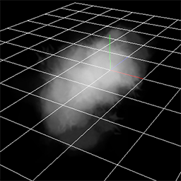
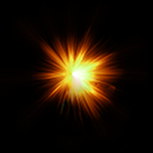
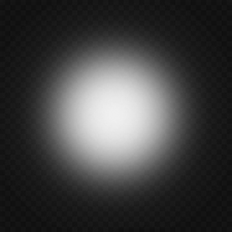

No09.マズルフラッシュを作成しよう！¶
概要¶
本章では、今までに覚えた知識を用いてマズルフラッシュのエフェクトを作成します。 マズルフラッシュとは、銃を撃った時に先端に出現する火です。 射撃があるゲームでは、マズルフラッシュは必須です。
マズルフラッシュ
マズルフラッシュ¶
マズルフラッシュの構造を分解してみます。 本章で作成するマズルフラッシュは、大きく分けて3つのパーツで構成されます。 それは、閃光、火花、煙の3つです。

閃光 |

火花 |

煙 |
複雑なエフェクトを作成する場合は、パーツごとに分けて考えることが大事です。 本章では、それぞれのパーツの作成方法を説明します。
あらかじめ作成途中のエフェクトを下記のリンクからダウンロードできるようにしました。
閃光¶
閃光は3種類のスプライトで表現します。 本章では、弾が移動する方向をZとします。 XY方向に広がる閃光2種類と、全方向に広がる1種類です。
XY方向に広がる閃光は、配置方法を固定に設定したスプライトで表現します。 表現を豊かにするために、拡大して消えるスプライトと縮小して消えるスプライトの2種類を用意します。 いずれも一瞬だけ表示されるだけなので、20フレーム程度で消えるようにします。
全方向に広がるスプライトは拡大して消えるようにします。
それぞれに使用されている画像とパーティクルは以下のようになります。
フェードイン、フェードアウト、全体色等、今までの章で説明したパラメーターも変更しています。
変更するパラメーターが多いため、予めサンプルでは全て設定済みです。

閃光1 |

閃光2 |

閃光3 |

閃光1 |

閃光2 |

閃光3 |
閃光エフェクトは以下の映像のようになりました。
閃光
火花¶
火花は丸い画像が表示された複数のスプライトで表現します。 ただ、火花が飛び散る方向を指定するために親子関係を用います。
Z方向を軸として円形に火花が配置されるようにします。 円形に配置するために、親のノードのの生成方法に円を指定します。 火花が円の外側を向くように、角度に影響にチェックします。
そうすると、子のパーティクルがY方向に移動すると円の外側に向かうようになります。

生成方法と親子関係
それに加えて、Z方向を軸として親のノードを回転させます。 そうすると、子のパーティクルがY方向に移動すると弾が移動する方向に向かうようになります。

生成方法と親子関係
子のパーティクルの形状は最初は長く、最後は短くなるようにします。 その動作を、移動と拡大のイージングで実現しています。
子のパーティクルの動作は今までの章で解説しているため、予め設定しています。
親のノードのパラメーターは以下の通りです。
| ウインドウ | 値の名称 | 値 |
|---|---|---|
| 共通 | 名称 | SparkEmitter |
| 共通 | 生成数 | 16 |
| 共通 | 生存時間 | 30 |
| 共通 | 生成時間 | 0.01 |
| 回転 | 回転方法 | 角度・速度・加速度 |
| 回転 | 角度(度)-中心 | x=55, y=0, z=0 |
| 回転 | 角度(度)-振幅 | x=10, y=0, z=0 |
| 生成方法 | 角度に影響 | On |
| 生成方法 | 生成方法 | 円 |
| 生成方法 | 分割数 | 32 |
| 生成方法 | 半径(中心) | 0.5 |
| 描画 | 無し |
火花エフェクトは以下の映像のようになりました。

火花
煙¶
煙は煙の画像が表示された複数のスプライトで表現します。
煙はZ方向に移動しつつ、やや上に向かうようにします。
煙の画像は4枚のアニメーションで構成されています。 一定時間経過するごとに画像を切り替えることで、煙が変化しているように見せます。 画像が切り替わるようにするためには、UVをアニメーションにします。

煙の画像
煙の動作も今までの章で解説した変更がほとんどのため、サンプルでは予め設定しています。 UVのみ設定されていません。 また、描画を無効にしています。編集するときに描画を有効にしてください。 UVのパラメーターは以下の通りです。
| ウインドウ | 値の名称 | 値 |
|---|---|---|
| 描画共通 | UV | アニメーション |
| 描画共通 | 大きさ | 256,256 |
| 描画共通 | 一枚当たりの時間 | 10 |
| 描画共通 | 横方向枚数 | 2 |
| 描画共通 | 縦方向枚数 | 2 |
煙エフェクトは以下の映像のようになりました。

煙

まとめ¶
本章では、実際にゲームで使用できそうなエフェクトを作成しました。